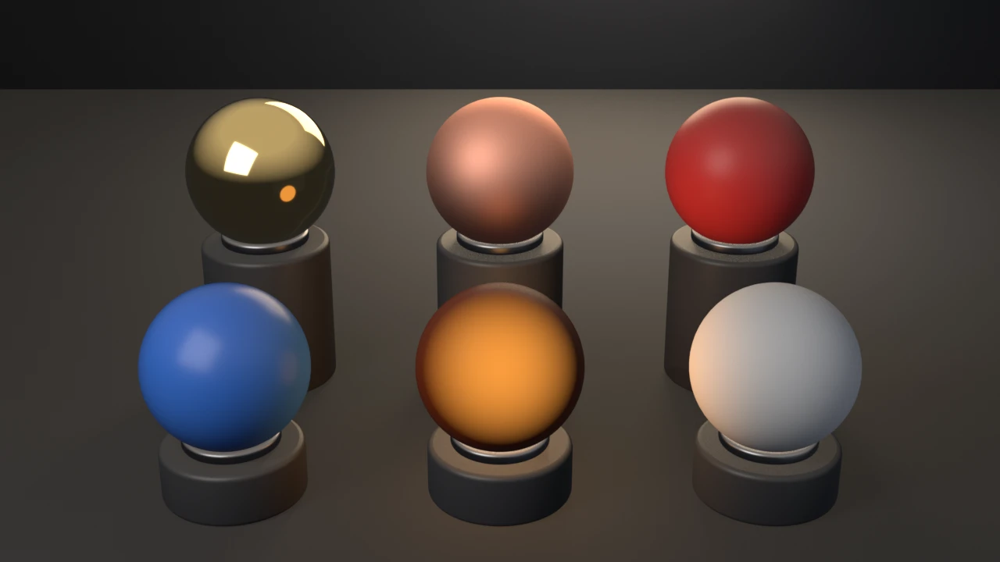
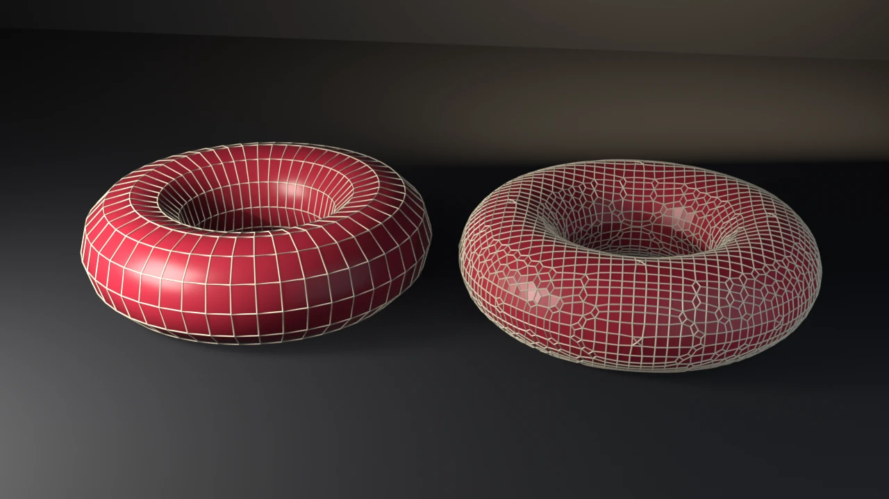

swatch-grid
Procedural Principled materials — metal and dielectric, the emission pattern, and the cross-version set_specular shim.
witnesses EEVEE engine-id mapping: BLENDER_EEVEE on 5.x, BLENDER_EEVEE_NEXT on 4.2–4.5.
View example →Runnable, smoke-gated demos. Each is executed headless on Blender 4.5 LTS and 5.1 by the
blender-smoke workflow, so every render reflects code that actually runs.

Procedural Principled materials — metal and dielectric, the emission pattern, and the cross-version set_specular shim.
witnesses EEVEE engine-id mapping: BLENDER_EEVEE on 5.x, BLENDER_EEVEE_NEXT on 4.2–4.5.
View example →A slotted-actions Z-rotation turntable keyed through the cross-version channelbag path (get_channelbag_for_slot).
witnesses Slotted-actions boundary: ensure-helper channelbag on 5.x, strip.channelbag on 4.4/4.5.
View example →
A Geometry Nodes SDF remesh (MeshToSDFGrid → GridToMesh at the SDF zero-level), with a Set Material node carrying the material through the remesh.
witnesses An SDF grid is meshed with Grid to Mesh, not Volume to Mesh; GN geometry needs Set Material or it renders untextured.
View example →